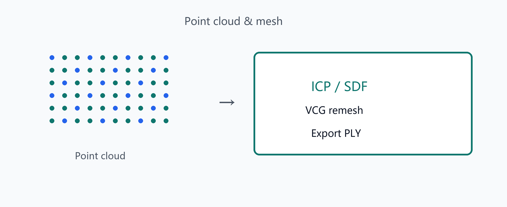

Point cloud workflow
Point cloud & mesh tools
Import, downsample, crop; ICP / SPARE / non-rigid registration
Reconstruct; export PLY; VCG simplify/smooth/repair/remesh
Multi-stage surface reconstruction; template B-rep update from scans
CloudSim User Help · Select a chapter from the left TOC